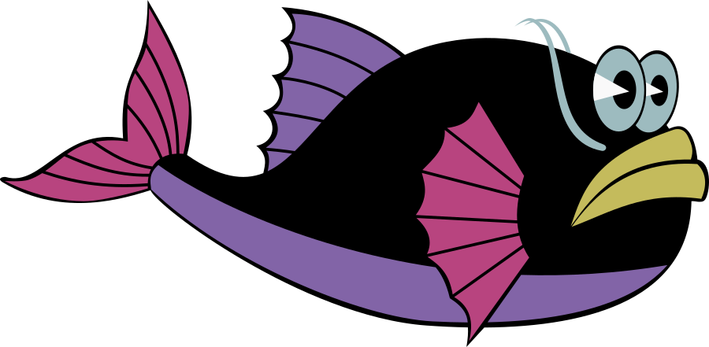
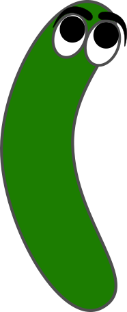

v4
TURNO 4
Mesa do motor — a crianca fabrica o tempo a mao: cada Pronto fotografa o mundo e acrescenta um quadro a fita. A colheita ainda nao existe.
reconstrucao, nao o codigo original
Regras de transição · turno 1 · Transition rules · turn 1
Três editores candidatos. Demonstrar é o ato principal nos três; a lista de regras é o mesmo objeto visto de forma plana. · Three candidate editors. Demonstration is the primary act in all three; the rule list is the same object seen flat.
1a
Gravador no palco · Stage recorder
Você arrasta o peixe no próprio aquário. O sistema fotografa o antes e o depois. Nenhum formulário — a regra é o exemplo. · You drag the fish inside the aquarium itself. The system photographs the before and the after. No form — the rule is the example.
AQUÁRIO · AO VIVO · AQUARIUM · LIVE
● GRAVANDO · ● RECORDING

Arraste o peixe uma casa à direita · Drag the fish one cell to the right
GESTOS · COMO FAZER O DEPOIS · GESTURES · HOW TO MAKE THE AFTER
arrastar é só um deles · dragging is just one
{{ g.g }}
{{ g.label }}
→ {{ g.outLabel }}
{{ g.en }}
➜
A mãe continua ali — por isso é duplicar, e não andar. Duplicar nunca é regra de uma casa só. · The mother is still there — that is why it reads as duplication, not movement. Duplication is never a one-cell rule.
O QUE FOI GRAVADO · WHAT WAS RECORDED
ANTES · BEFORE
➜
DEPOIS · AFTER
Toque numa casa para dizer não importa ✳ · Tap a cell to say does not matter ✳
Guardar regra · Save rule
Refazer · Redo
MINHAS REGRAS · EM ORDEM · MY RULES · IN ORDER
a primeira que casa, vence · first match wins
{{ r.n }}
➜
{{ r.en }}
{{ r.arrow }}
{{ r.prob }}%
⚙ MODO AVANÇADO · ⚙ ADVANCED MODE
escotilha · escape hatch
{{ d.g }}
A seta gravada pode ser trocada por várias — ou por qualquer. A grade 3×3 de vizinhança fica aqui, longe das crianças. · The recorded arrow can be swapped for several — or for any. The 3×3 neighbourhood grid lives here, away from the children.
1b
Fita de momentos · Filmstrip of moments
A criança volta no tempo, escolhe dois instantes vizinhos e diz: isto virou regra. Generalizar é apagar. · Where rules are tuned, not born. The child goes back in time, picks two adjacent moments and says: this became a rule. Generalising is erasing.
DE ONDE VEM A FITA? · WHERE DOES THE STRIP COME FROM?
nada é pré-gravado · nothing is pre-recorded
{{ s.g }}
{{ s.label }}
{{ s.noteLabel }}
{{ s.en }}
MESA DO MOTOR · VOCÊ MEXE, ELA GRAVA · ENGINE TABLE · YOU MOVE, IT RECORDS
{{ p.n }}
🎭
Passo 4: arrastei o peixe uma casa e pintei uma alga. O peixe apagado mostra onde ele estava. · Step 4: I dragged the fish one cell and painted an algae. The faded fish shows where it was.
{{ g.g }}
{{ g.label }}
Pronto — próximo passo ➜ · Done — next step ➜
↩
Cada vez que você diz pronto, o mundo é fotografado e a foto vira o próximo quadro da fita. É assim que nasce o tempo: você decide quando o instante acabou. · Every time you say done, the world is photographed and the photo becomes the next frame. That is how time is born: you decide when the moment ended.
FITA DO TEMPO · TIMELINE
⇥
Dois instantes vizinhos selecionados: t3 → t4 · Two adjacent moments selected: t3 → t4
O QUE IMPORTA? · WHAT MATTERS?
apague o resto · erase the rest
Duas casas guardadas, catorze apagadas. A regra ficou curta — e serve para todo o aquário. · Two cells kept, fourteen erased. The rule came out short — and it works for the whole aquarium.
Virar regra · Make it a rule
Ver casos · See cases
QUANDO NINGUÉM SABE · WHEN NOBODY KNOWS
Nunca vi isto. O que acontece aqui? · I have never seen this. What happens here?
A simulação para na primeira vizinhança desconhecida e pede a regra. É assim que tabelas grandes — Langton, von Neumann — ficam construíveis: uma pergunta por vez. · The simulation stops at the first unknown neighbourhood and asks for the rule. That is how big tables — Langton, von Neumann — become buildable: one question at a time.
⚙ MODO AVANÇADO · ⚙ ADVANCED MODE
A fita também aceita t−2: regras que olham dois passos atrás. Útil para Wireworld, onde a cauda do elétron é memória. · The strip also accepts t−2: rules that look two steps back. Useful for Wireworld, where the electron tail is memory.
1c
Bancada de regras · Rule workbench
Demonstrar continua sendo o padrão. Mas a regra tem tipos: contar, tabela, quantidade, bloco, fita 1D, turmite. Um seletor, não um segundo editor. · Demonstration is still the default. But rules have kinds: count, table, quantity, block, 1D strip, turmite. A selector, not a second editor.
TIPO DE REGRA · KIND OF RULE
{{ k.g }}
{{ k.label }}
{{ k.en }}
CONTAR · O JOGO DA VIDA EM UM CARTÃO · COUNT · LIFE ON A SINGLE CARD
B3/S23
nasce · is born
{{ b.n }}
continua · stays
{{ b.n }}
vizinhos · neighbours
quantos ao redor são · how many around are — no direction, no 3×3 grid

— sem direção, sem grade 3×3
QUANTIDADE · A ÁGUA QUE SE NIVELA · QUANTITY · WATER THAT LEVELS ITSELF
7
➜
1
2
Se eu tenho mais que o vizinho, passo 1 para ele. · If I have more than my neighbour, I pass 1 along.
Uma regra de transferência na fronteira entre duas casas. Nada é criado; o total nunca muda. · A transfer rule on the edge between two cells. Nothing is created; the total never changes.
FITA 1D · WOLFRAM SÃO OITO CARTÕES · 1D STRIP · WOLFRAM IS EIGHT CARDS
↓
Regra · Rule
110
— o número é lido nos oito cartões, não digitado · — the number is read off the eight cards, not typed
GALERIA · SÓ PARA VER RODAR · GALLERY · JUST TO WATCH IT RUN
{{ g.states }}
{{ g.tagLabel }}
POR QUE ISTO ESCALA · WHY THIS SCALES
Cada tipo é um cartão novo na mesma lista ordenada, com a mesma chance %. A criança nunca troca de editor — ela ganha vocabulário. E as regras impossíveis de escrever (von Neumann) ficam na galeria, para ler. · Each kind is a new card in the same ordered list, with the same % chance. The child never switches editor — she gains vocabulary. And the rules impossible to write by hand (von Neumann) stay in the gallery, to read.
A DECIDIR · TO DECIDE
Todos os três resolvem direção com uma seta por regra e mantêm a grade 3×3 como escotilha avançada. A diferença real é quando a criança grava: no ato (1a), depois no tempo (1b), ou numa bancada com tipos (1c). 1c é o único que responde Life / Wolfram / água — mas pode ser a camada avançada de 1a, não um rival. · All three solve direction with one arrow per rule and keep the 3×3 grid as an advanced hatch. The real difference is when the child records: in the act (1a), later in time (1b), or at a workbench with kinds (1c). 1c is the only one that answers Life / Wolfram / water — but it could be the advanced layer of 1a, not a rival.
AINDA EM ABERTO · STILL OPEN
Bloco/Margolus e turmite aparecem no seletor de 1c mas não têm superfície desenhada. O núcleo/curva (difusão) também não — provavelmente pertence ao professor, não à criança. · Block/Margolus and turmite appear in the 1c selector but have no surface drawn yet. Neither does the kernel/curve (diffusion) — it probably belongs to the teacher, not the child.